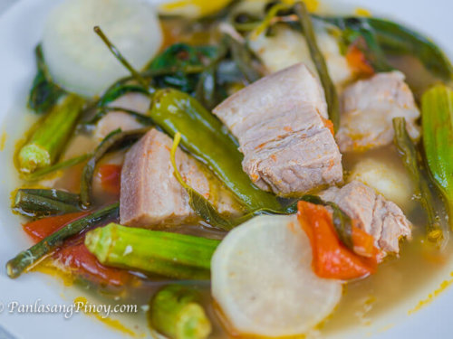
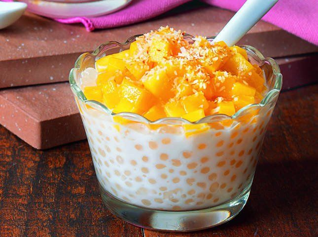
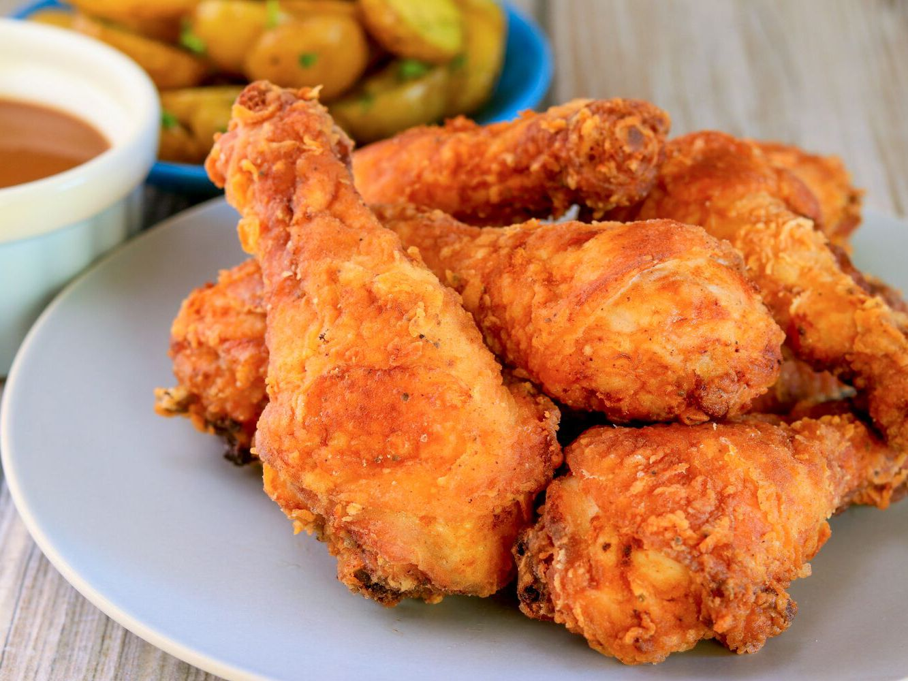
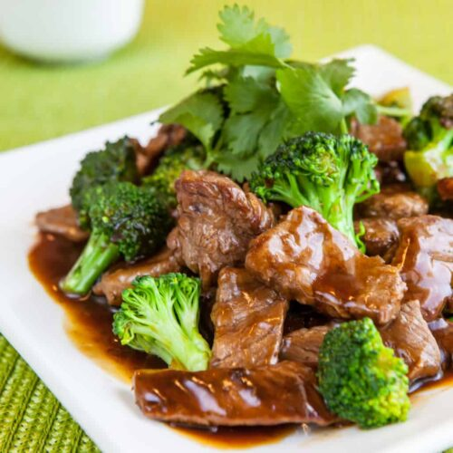
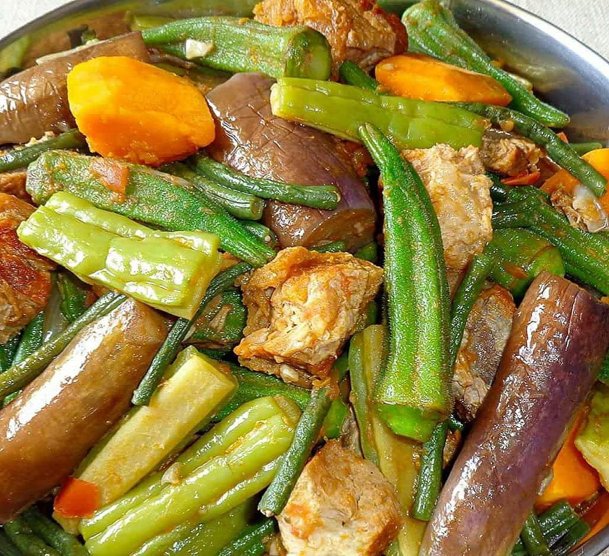
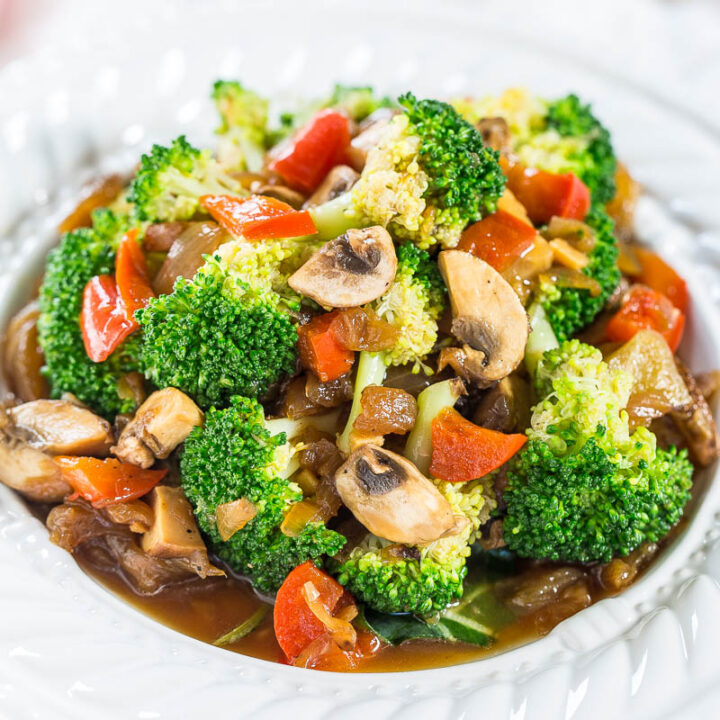
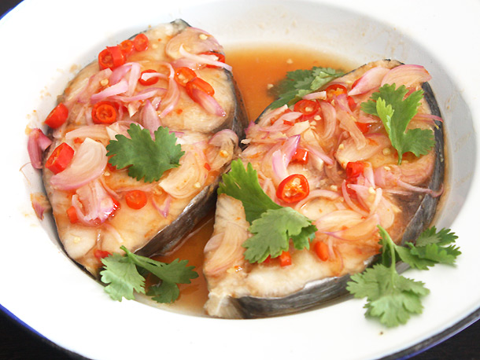
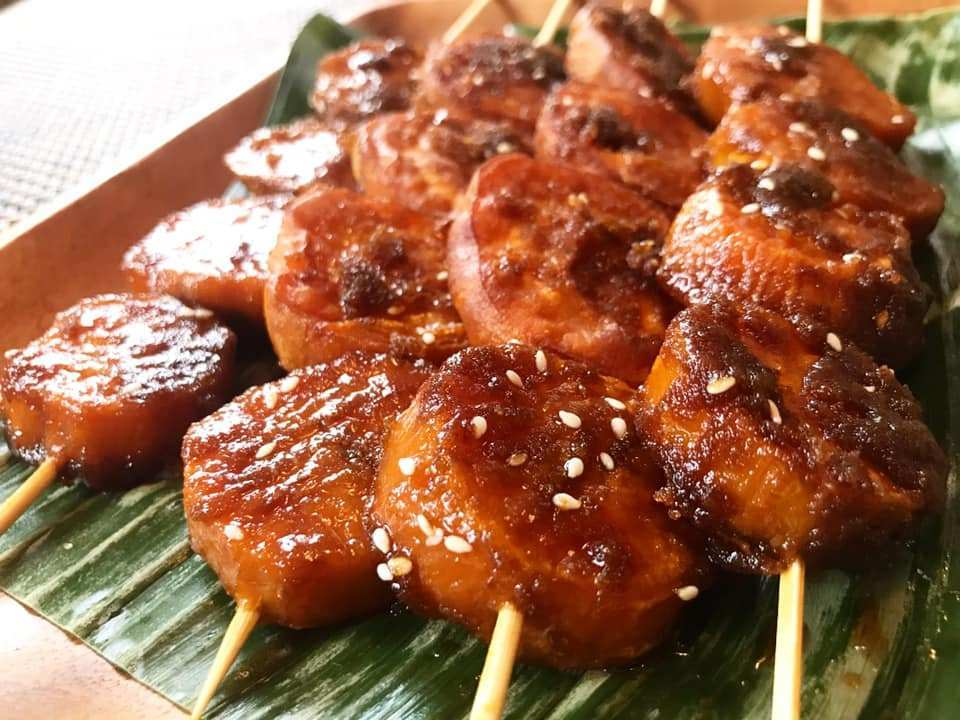

FILIPINO FOOD RECIPES


Sinigang is a Filipino soup or stew characterized by its sour and savoury taste

Mango pomelo sago is a type of contemporary Hong Kong dessert.

Fried Chicken is a dish consisting of chicken pieces which have been coated in a seasoned.

Beef Steak are stewed in a soy sauce and lemon juice mixture until the beef gets very tender.

Pakbet is an indigenous Filipino dish from the northern regions of the Philippines.

beef and broccoli stir fry is a classic dish of beef sauteed coated in a savory sauce.

Thai-style sweet and sour steamed fish Filipino Style.

Adobo is marinating and stewing for any cut of meat in a briny mixture of vinegar, soy sauce, and spices.

Kamote Cue is refers to skewered deep fried sweet potatoes with a coating of caramelized brown sugar.